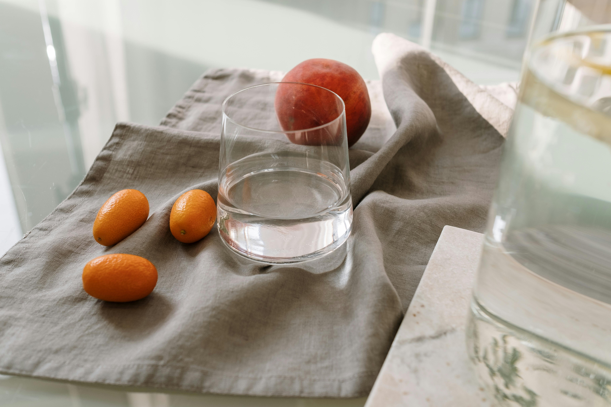
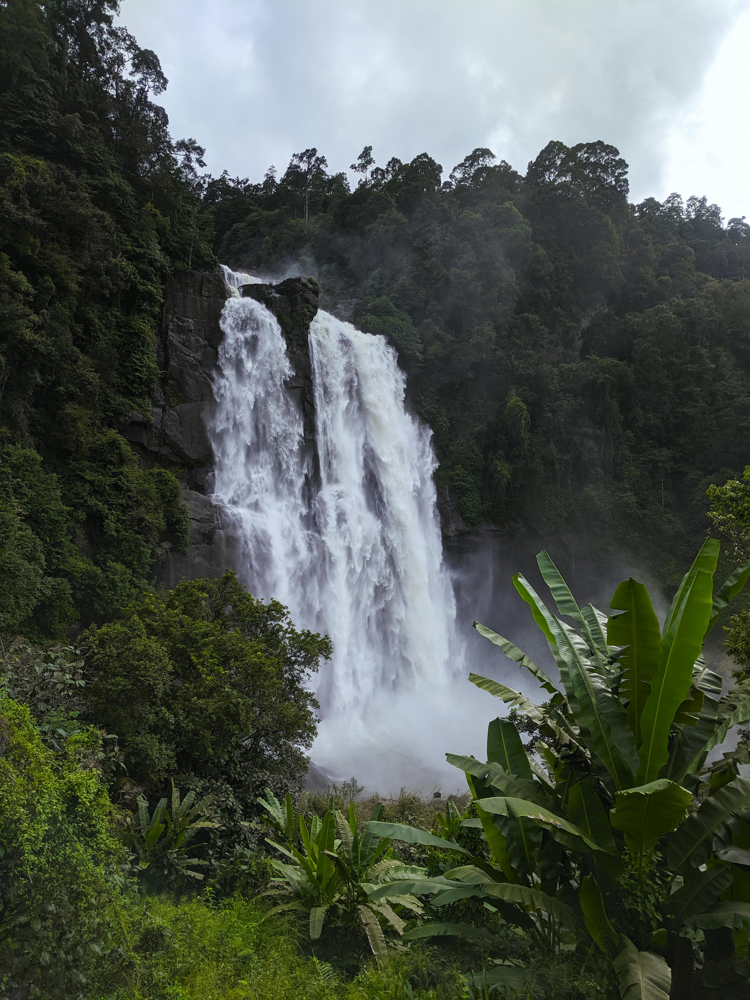
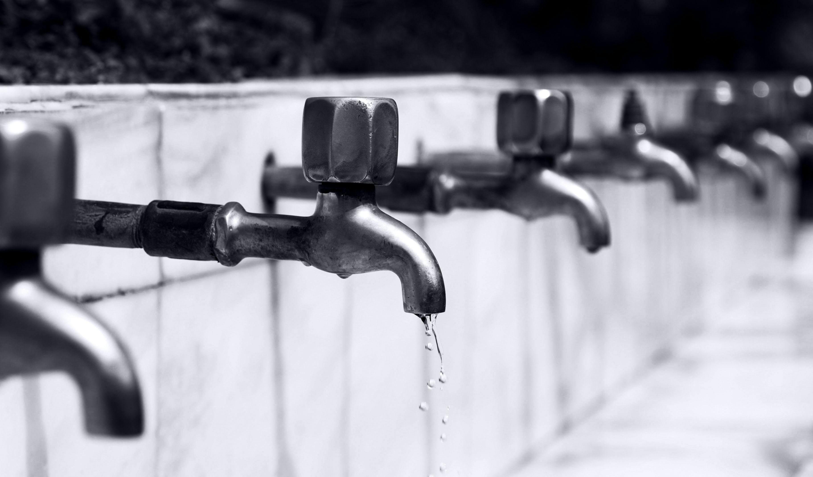
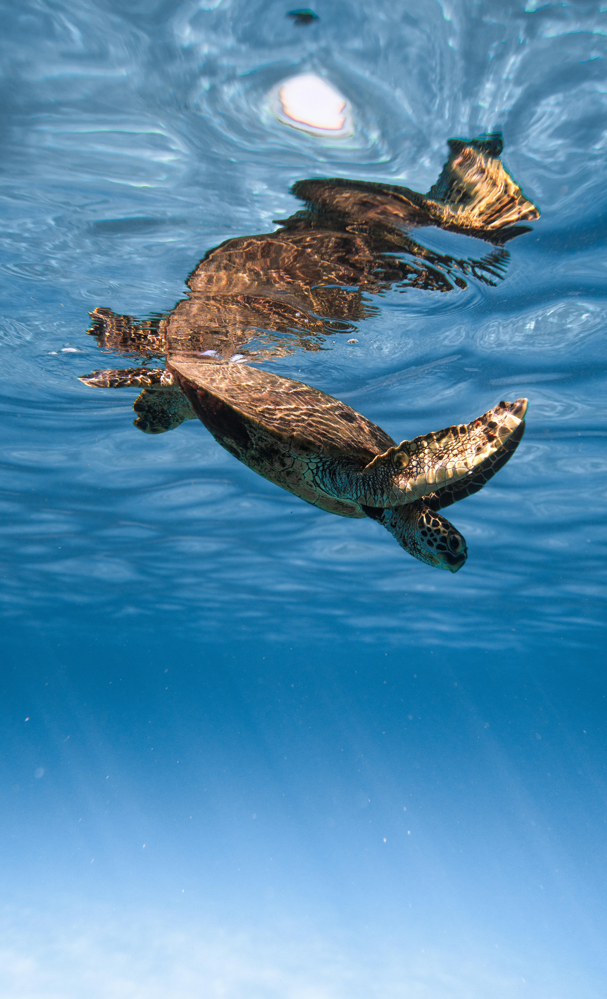
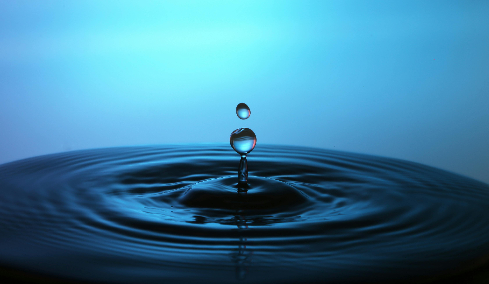
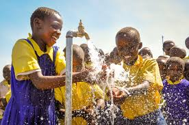
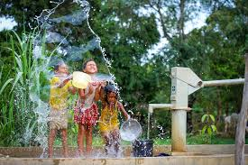

Clean Water Gallery
A collection of images celebrating access to safe and clean water.

Refreshing Hydration
A clean glass of drinking water symbolizing the importance of safe hydration in daily life.

Natural Water Source
A powerful waterfall delivering fresh, naturally filtered water essential for ecosystems and communities.

Access to Clean Tap Water
Reliable infrastructure ensures clean tap water is available in households around the world.

Protecting Aquatic Life
Clean water is vital for marine animals, helping ecosystems thrive and stay pollution-free.

Water Purity
A single droplet highlights the clarity and purity that clean, uncontaminated water provides.

Safe Drinking Supply
Fresh, filtered water being poured to demonstrate the importance of proper treatment and sanitation.

Community Water Access
Children celebrate as they collect clean water from a shared pump, emphasizing its role in community health.

Clean Water for All
A joyful moment showing children enjoying safe water provided through sustainable water systems.